DNA Video -- The Structure of DNA
https://www.youtube.com/watch?v=o_-6JXLYS-k
DNA(deoxyribonucleic acid) Structure and function
Common form of the DNA double helix: B-form DNA.
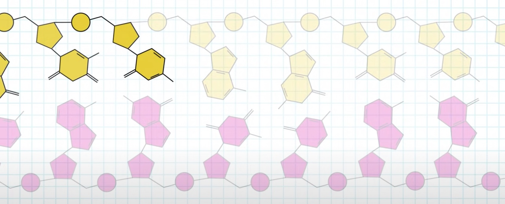
Each strand is polynucleotide. Meaning the strand is made up of many individual units called nucleotide.
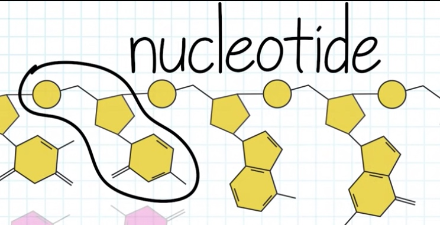
Nucleotide = five-carbon sugar + phosphate group + four possible nitrogenous bases(Adenine, guanine, thymine and cytosine.)
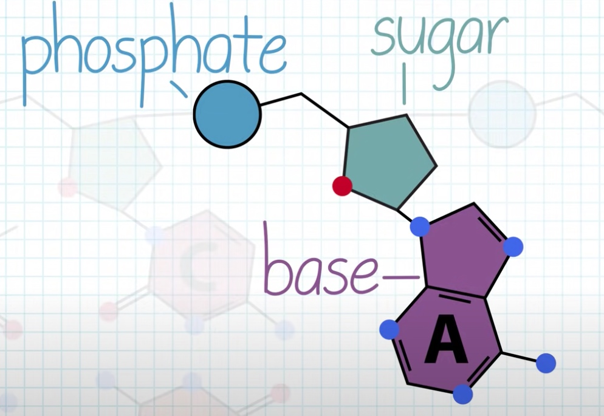
The nitrogenous base is always attached to 1' carbon of the sugar.
We can see the phosphate is between 5' of this sugar and 3' of neighbor sugar.
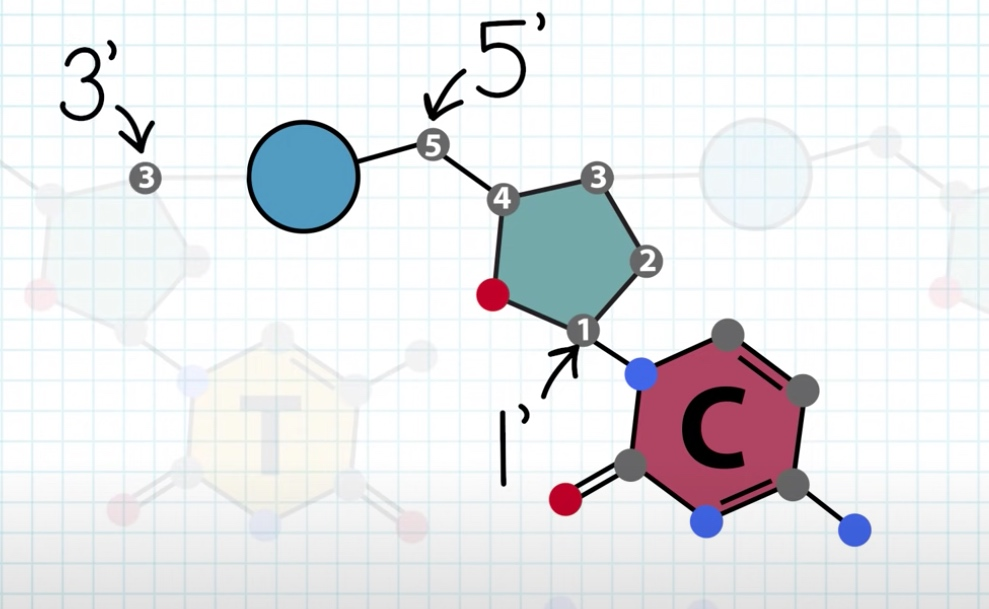
The sugar is called deoxyribose. Because it is missing a hydroxul froup at the 2' carbon which is present in ribose.
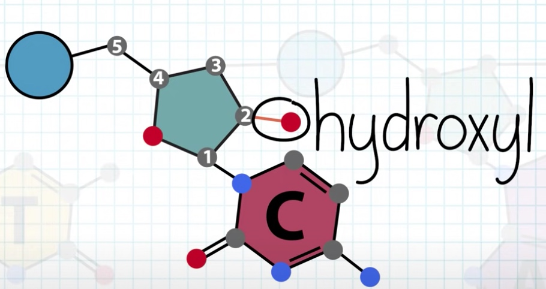
Nucleotides in DNA(deoxyribonucleic acid) is called deoxynucleotides.
Nucleotides attach to each other in the DNA strand by phosphodiester bonds.
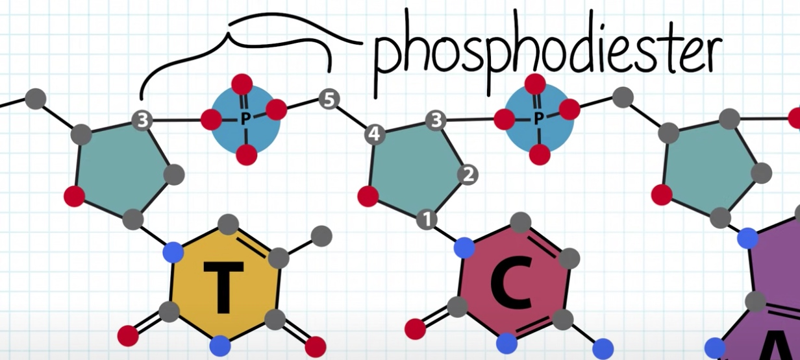
The sugars and phosphate groups make up the DNA backbone.
The carbon numbering is key to describing the directionality of the DNA strand, 5' to 3' or 3' to 5'.
5'->3' is called Watson. 3' to 5' is called Crick.
The nucleotides come together through covalent bonds in the backbone.
The two DNA strands interact through non-covalent hydrogen bonds between the bases.
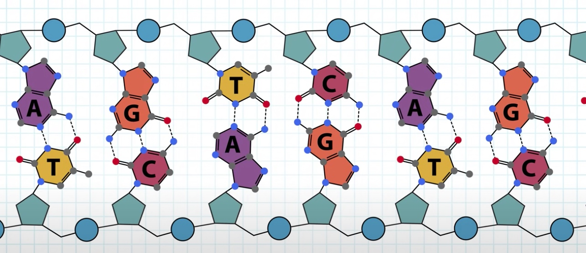
Each base forms multiple hydrogen bonds.
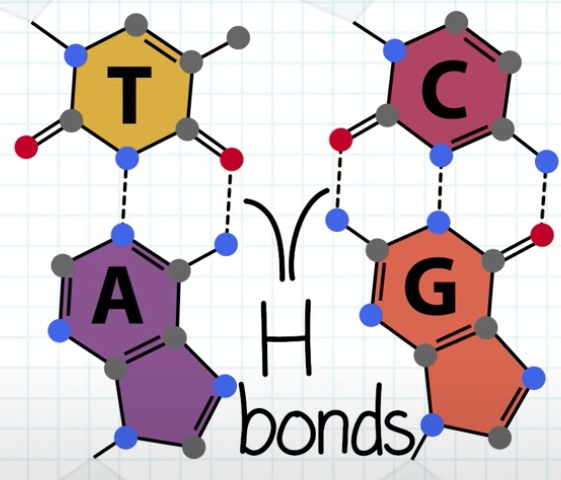
- Base pair: A--T(Ademine--Thymine), C(Cytosine)--G(Guanine).
- Pyrimidines: Thymine and Cytosine
- Purines: Adenine and Guanine
- AT and CG is allowing for symmetry and base stacking in the helix. Which is related to the distance between backbones and the angles to which the bases attach to the backbone.
Each turn of the helix measures approxinamely ten base pairs.
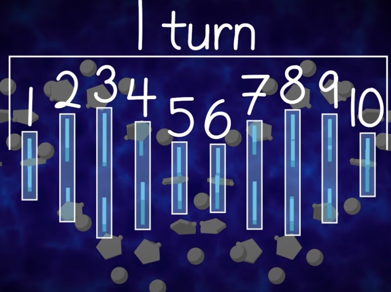
In addition to the hydrogen bonding between bases, the stack of the bases also stabilizes the double helix.
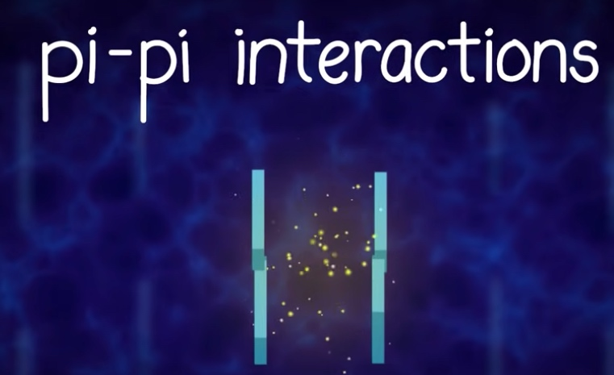
The Pi-Pi interactions between the aromatic rings of the bases stack next to each other and share electron probabilities.
The regularity of the helical structure forms two repeating and alternating spaces, called the major and minor groves.
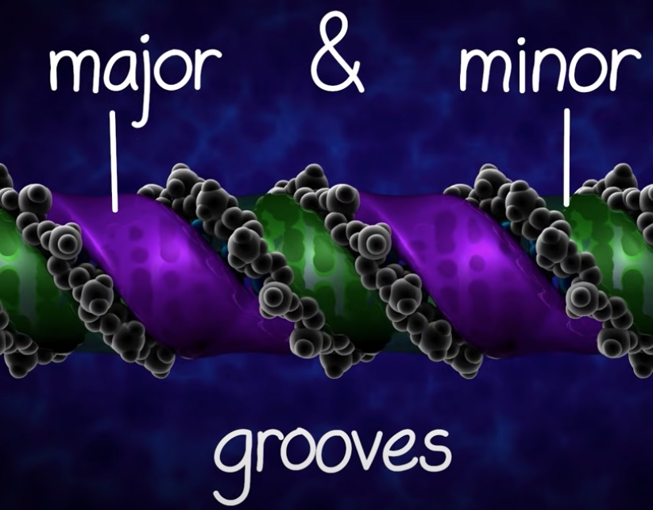
These grooves act as base pair recognition and binding sites for proteins.
The major groove contains base pair specific information.
The minor groove is largely base pair nonspecific.
In this case, DNA can be act upon in either a sequence specific or non-sequence specific manner.
Video2: Alternative nucleic acid structures.
What are the different structures that nucleic acids can form?
- Describe the physical forces that cause DNA to fold up into its many different secondary structures.
- Distinguish the differences between RNA and DNA. And the reason they can fold differently
A nucleotide is composed of a nucleoside(base + sugar) and phosphate group.
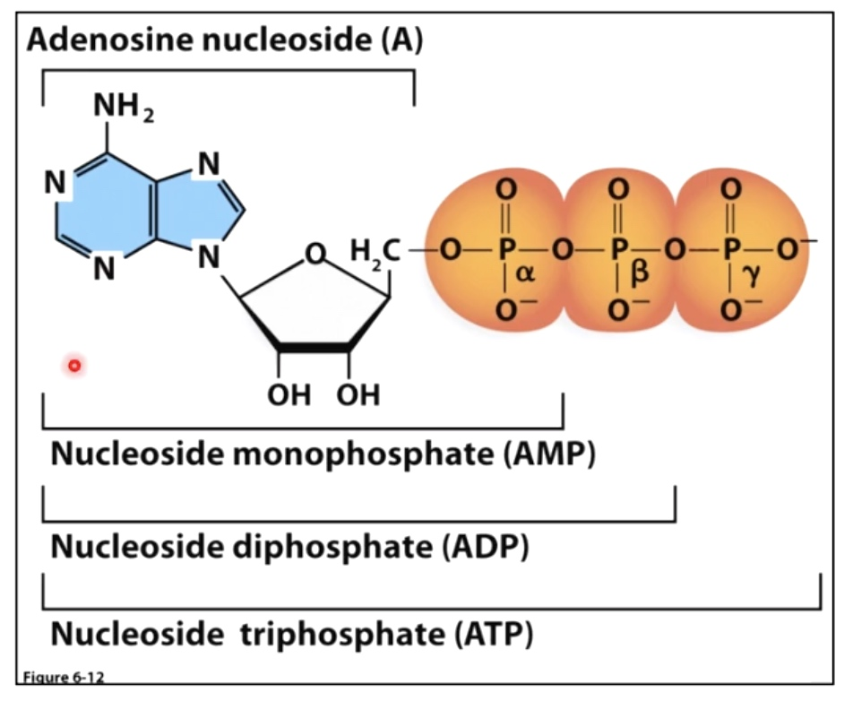
The generation of Cytosine.
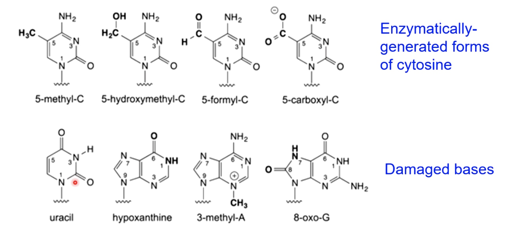
Bases can exist in tautomeric states
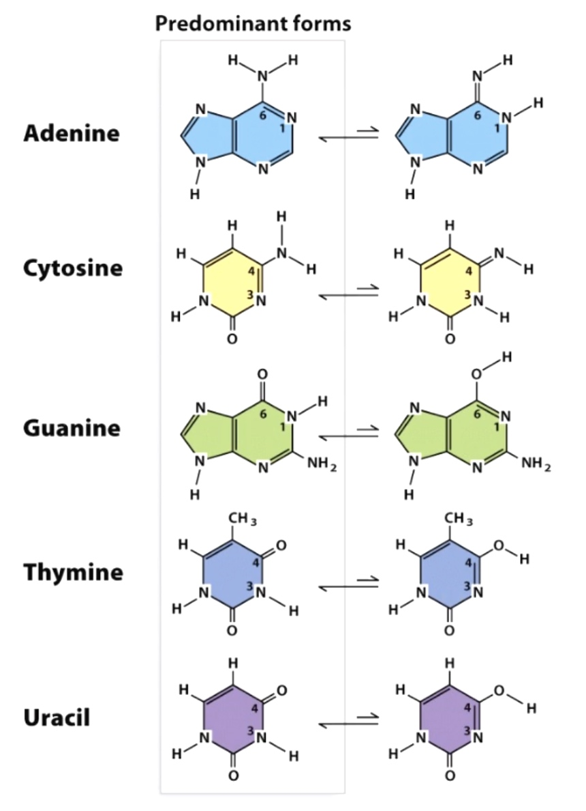
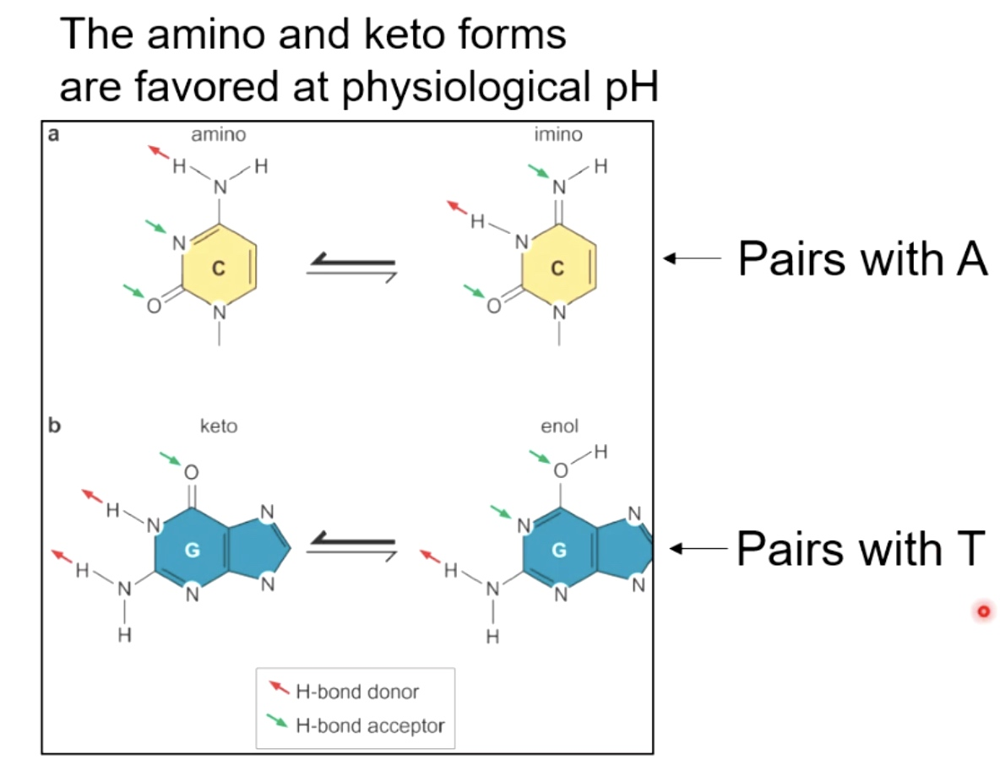
What determines the secindary structure of DNA?
- Hydrogen bonding between nitrogenous bases(2 hydrogen bonds between ademine and thymine. 3 hydogen bonds between Guanine and cytosine. )
- Base stacking(bases are sharing their pie electrons. The resonance is energetically favorable.)
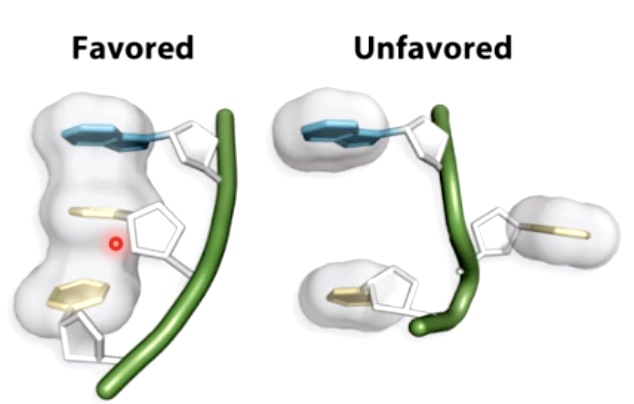
- Sugar-phosphate backbone + Major/Minor groove.
- One helical turen = 34A(10.5 base pairs) = Major groove + minor groove
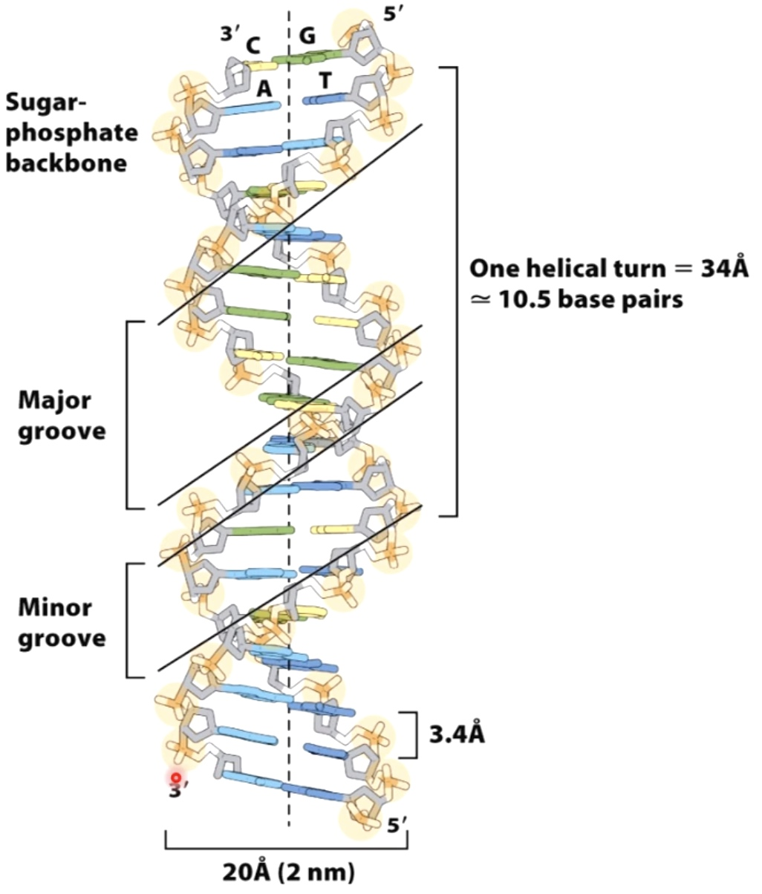
1 Angstrom = 0.1 Nanometer
Forms of DNA
B-form DNA
wide major groove and narow minor groove.
The diameter of 20 Angstrom is actually less than the width between the outside strands of the DNA in the major groove. There is a lot of space there including proteins that help to regulate expression of the DNA.
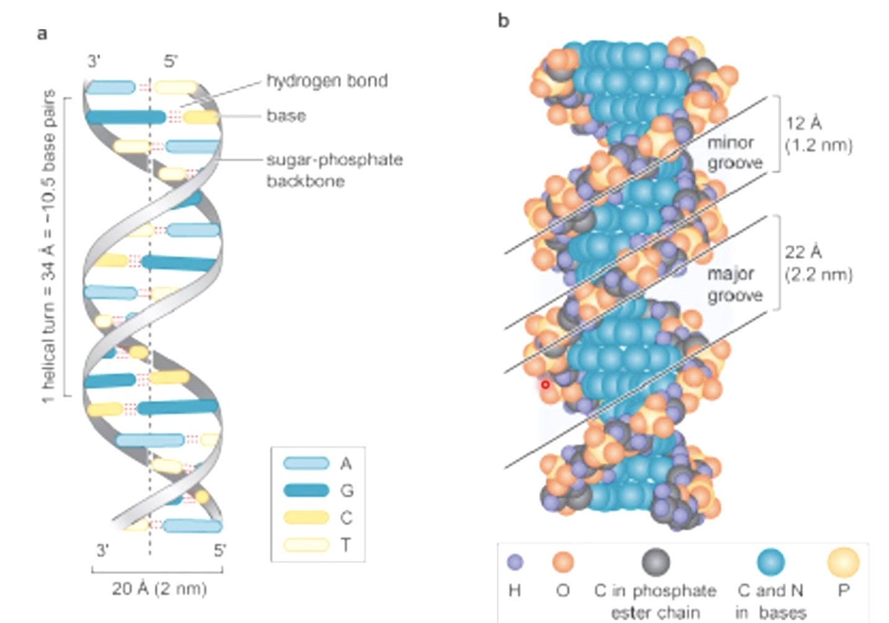
A-form DNA
The major groove is much bigger and minor groove is much smaller.
Z-form DNA
Z-DNA often forms in sequences that have alternating purine-pyrimidine bases. (CG)n
Hairpin Loop Structure DNA
This hairpin is often formed in single stranded DNA, in which you have tried nucleotide repeats.
Repeated CGG(ssDNA) and CAG(dsDNA) usually form such structures.
These structures can stall NA replicationi and transcription due to their bulky nature and the way they can prevent processility of DNA polymerases and RNA polymerases.
Triplex DNA
Triplex DNA is formed using Hoogsteen base pairing
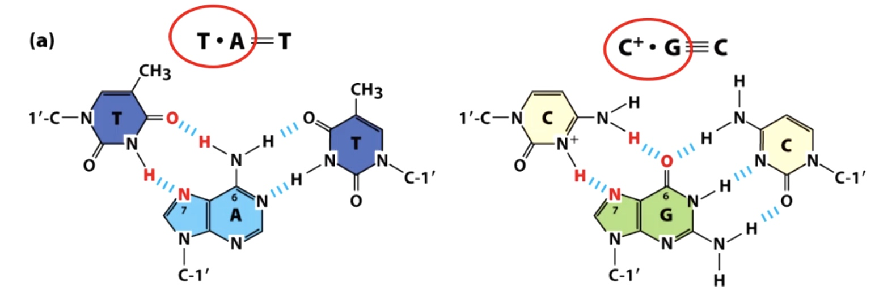
The red one is Hoogsteen base pairing.
Two strands would engaging in Waston-Crick base pairing and the third strand will participate in Hoogsteen ase pairing.
Such structure always found in Purine rich or pyrimidine rich solution.
G-quadruplex DNA
G-quadruplex(G4) DNA is formed in G-rich sequence.
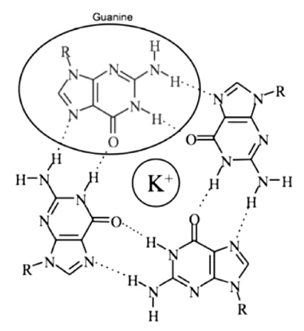
A potassium ion serving to coordinate these hydrogen bonds.
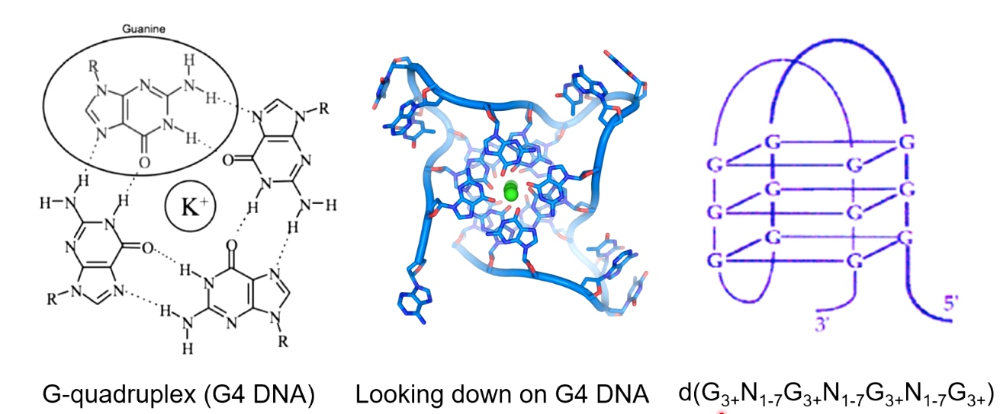
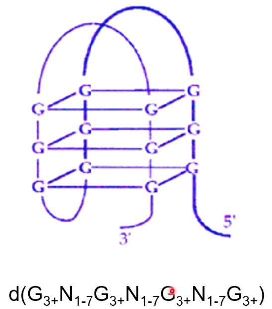
several Gs followed by several other bases
RNA Structure
- There is Uracil instead of thymine
- Usually single-stranded, but has lots of secondary structure
- 2' OH of ribose is very reactive, so RNA in solution is less stable.
In RNA, non-canonical base pairing in RNA leads to complex secondary structures.
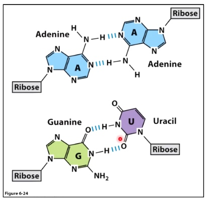
RNA can also form double-helical structures
A-U base pairs are extremely weak, but an RNA helix is more energetically stable than a DNA helix.
Because RNAs can fold into very complex shapes, they can sometimes act as enzymes. (ribozymes)